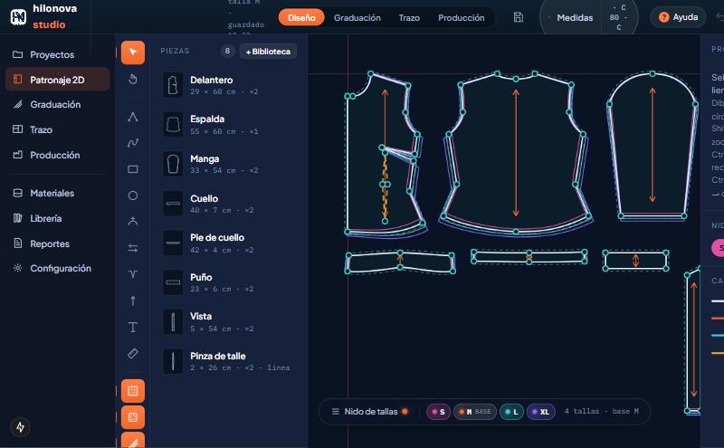
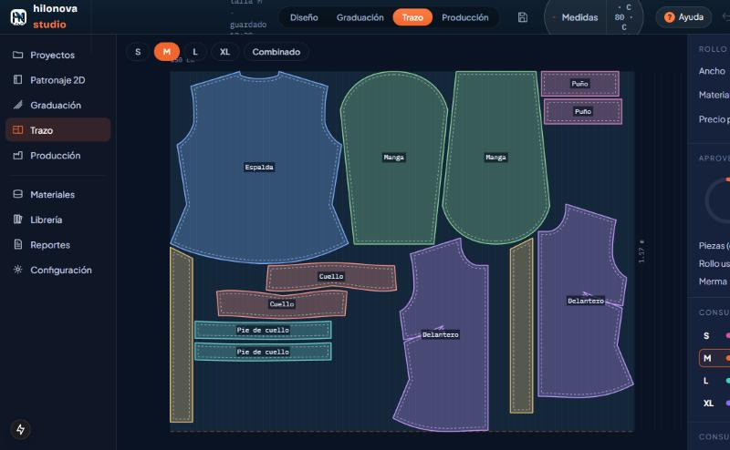

Patronaje digital avanzado, desde tu navegador
Diseña patrones 2D, gradúa tallas y calcula el acomodo de corte con el consumo de tela y el porcentaje de aprovechamiento. Sin instalar nada: funciona en el navegador de tu computadora.

Todo el proceso del patrón a la mesa de corte
Las etapas del patronaje digital, en una herramienta clara y en español.
Patronaje 2D
12 herramientas y 17 prendas base que se ajustan a tus medidas.
- Blusa, camisa, pantalones, faldas, vestido, chamarra, sudadera y más
- Piquetes, pinzas, hilo de tela y textos
- Biblioteca de piezas y «Mis piezas»
Graduación
Automática con las reglas de cada prenda, o manual nodo por nodo.
- Δx / Δy por nodo y por talla
- Nido de tallas a color
- S–XL, XS–XXL y 28–36
Trazo
Acomodo automático de las piezas reales, con su margen de costura.
- Consumo de tela por talla y por prenda
- Porcentaje de aprovechamiento
- Trazo por talla o combinado
Producción
Ficha técnica, variantes de modelo y reporte de consumo.
- Ficha técnica en PDF
- Variantes de modelo con su consumo
- Costo de tela por talla
Verificación de costuras
Compara dos tramos que se cosen (costados, hombros, copa contra sisa) y te dice cuánto se pasan.
Exportación
PDF a escala 1:1 en hojas A4 o para plotter, SVG y DXF estilo AAMA (en validación).
Del patrón a la fábrica, en cuatro pasos

Lleva tus patrones al taller
Imprime el patrón a tamaño real en hojas A4 para pegarlas, mándalo al plotter en PDF 1:1, o pásalo a otro sistema con SVG o DXF. El DXF usa la estructura de capas AAMA y todavía está en validación: pruébalo en tu versión antes de producir.
Un plan, un precio
Todo el programa incluido. El cobro todavía no está activo: esto es lo que se ofrecerá.
- Patronaje 2D: 12 herramientas, biblioteca de piezas y 17 prendas base
- Graduación: automática y manual (S–XL, XS–XXL y 28–36)
- Trazo: consumo de tela por talla y porcentaje de aprovechamiento
- Producción: ficha técnica, variantes de modelo y exportar PDF, SVG y DXF estilo AAMA (en validación)
- Proyectos ilimitados, ayuda dentro de la app y soporte por WhatsApp
¿Eres alumno de HiloNova?
Quienes toman los cursos de HiloNova tienen un acceso especial al programa. Pregunta por él en tu curso.
Antes de empezar
¿Necesito instalar algo?
No. Funciona en el navegador de tu computadora; lo hemos probado en Chrome de escritorio. Todavía no está probado en otros navegadores ni en tablet.
¿Dónde se guardan mis proyectos?
En tu navegador, y se guardan solos. Descarga un respaldo desde Configuración para no perderlos si limpias el navegador o cambias de computadora. Por ahora no hay guardado en la nube.
¿Reemplaza a Gerber o Lectra?
No. Es una herramienta de patronaje, graduación y trazo para talleres, estudiantes y marcas pequeñas. El DXF sigue la estructura de capas AAMA y todavía está en validación: revisa la importación en tu versión antes de producir.
¿Puedo imprimir el patrón en casa?
Sí. El PDF en mosaico divide el patrón en hojas A4 con marcas para pegarlas, a escala 1:1. Verifica la escala con una regla antes de cortar.
¿Cómo se paga?
El cobro todavía no está activo. Cuando lo esté, será una suscripción mensual con tarjeta. Te avisaremos antes de activarlo.
Soy alumno de un curso de HiloNova, ¿cómo entro?
Al terminar tu curso recibirás las indicaciones de tu acceso. Si tienes dudas, escríbenos por WhatsApp.